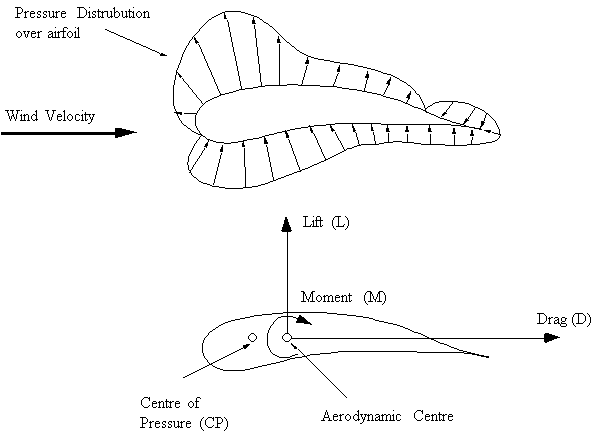
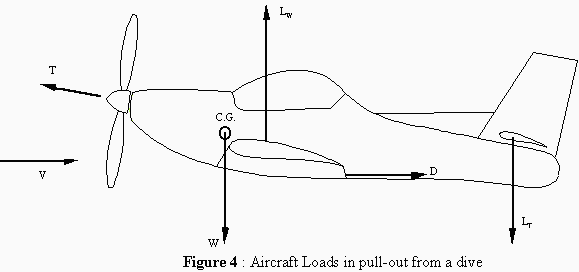
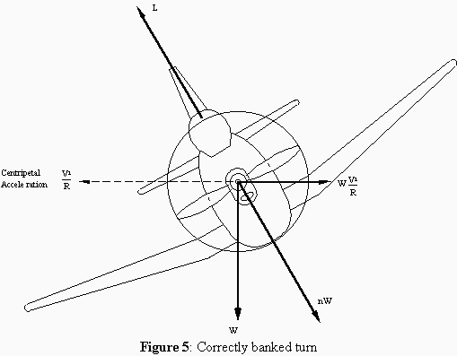
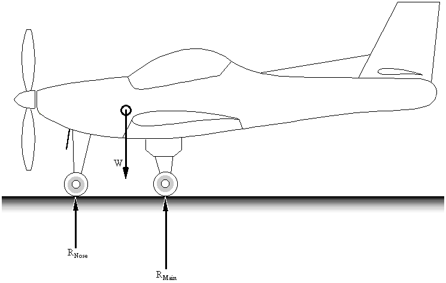

LOADS ON AIRCRAFT
TYPES OF LOADS
An aircraft is basically required to support two types of basic loads:- Ground Loads : Encountered by the aircraft during movement
on the ground;
ie: taxying, landing, towing, etc. - Air Loads : Loads exerted onto the structure during flight by the manoeuvres carried out by the aircraft or by wind gusts (such as wind shear).
As well as these, other role specific loads may be generated by the aircraft, ie:
- High Altitude Flying : Pressurised cabin,
- Amphibious aircraft : Landing on water,
- Military Aircraft : High Speed Manoeuvres, Withstand considerable damage
These two loads classes may be further divided into:
- Surface Loads : Act on the surface of the structure, such as aerodynamic or hydrostatic loads
- Body forces : Act over the volume of the structure and are generated by gravitational and inertia effects.
AERODYNAMIC SURFACE LOADS
All flying aircraft flying under steady flight, manoeuvre or gust conditions experience pressure distributions on the surface of the skin. The resultants of these pressures cause direct loads such as: bending, shear and torsion in all parts of the structure.
A conventional aircraft consists of : a fuselage, a pair of wings, and a tailplane (horizontal & vertical tail section). The fuselage carries crew, payload, passengers, cargo, weapons, or fuel. The wings provide lift and the tailplane contributes to directional control. As well there are ailerons, elevators and a rudder which enable the aircraft to be controlled, and flaps provide extra lift during take-off and landing. The force on an aerodynamic surface (wing, vertical & horizontal tail) results from a differential pressure distribution caused by incidence, camber or both.
For a typical wing, the chordwise pressure distribution is:
|
 |
|
Figure 1: Pressure distribution and resultant forces around airfoil |
This wing with incoming wind direction as shown creates this pressure distribution. By integrating the pressure in the vertical and horizontal components about the wind direction the following terms can be obtained:
a) The vertical Lift Force component (L), perpendicular to the wind direction.
b) The horizontal Drag component (D), parallel to the wind direction.
Both these resultants act through the centre of pressure (CP) of the airfoil. But as this point will move depending on the attitude of the airfoil to the incoming wind, the lift and drag forces are moved to act about the aerodynamic centre (AC) (the quarter chord). This means that an extra Moment (M) needs to be included to keep the system in equilibrium.
Accelerated Flight (Rapid Pull-out From Dive)
Increased downward load on horizontal tail, increases lift load causing upward acceleration normal to the flight path.

This causes the load factor 'n' to be greater than 1. Creating inertia load on the structure to be nmg, where:
$$n = 1 + V^2/{Rg}$$R = Radius of curvature of the flight path.
Steady Banked TurnThe aircraft flies in a horizontal turn without any sideslip and at a constant speed.

where:
$$n = sec(φ)$$ $$tan(φ) = V^2/{gR}$$ eg. for φ = 60o, n = 2Static Ground Condition
 |
Figure 6: Aircraft Static ground loads |
where:
RNose : Ground reaction at nose wheel
RMain : Main undercarriage ground loads
W : Weight of aircraft acting at centre of gravity (= mg)